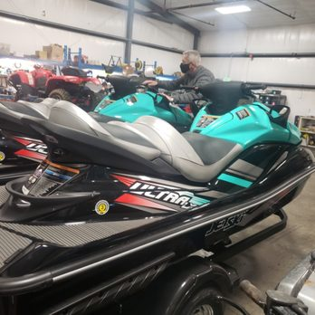

LOCATION 01
Lake
Lake
Whatcom.
Roughly 10 miles long and 325 ft deep at the deepest. The eastern arm is where the room is — long straights, plenty of water to open the throttle, and gorgeous forested shoreline. Most popular in July & August.
Coords48.74° N — 122.35° W
Length~10 miles (3 basins)
LaunchBloedel Donovan Park area
Best forWide-open rides & speed